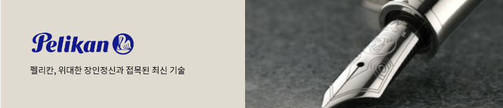
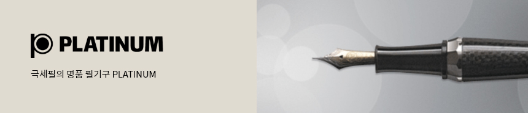
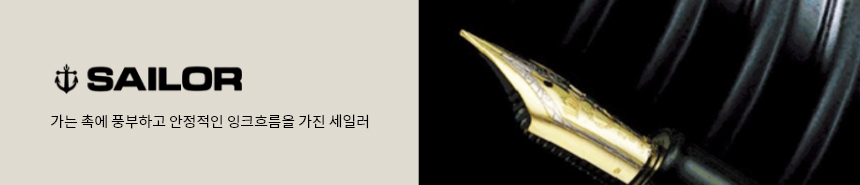
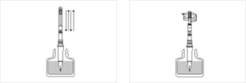
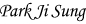
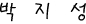
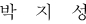
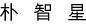

만년필이 궁금하세요?
고급필기구의 진정한 가치를 말해주는 브랜드 스토리를 모았습니다.
-
만년필 명가(名家)의 탄생
인류의 위대한 발명품 중에는 생활 속의 작은 불편함에서 시작되는 경우가 많습니다.
만년필의 명가(名家) 파카(Parker)의 시작도 미국의 한 도시에서 교사로 재직하던 평범한 남자의 생각의 전환에서 시작되었습니다.1888년, 교사로 재직하던 조지 새포트 파카(George Safford Parker)는 부업으로 만년필을 판매했는데, 당시 만년필들은 잉크가 자주 새는 문제점이 있어 고객들은 늘 불만이었습니다.
결국 그는 자신이 직접 만년필을 만들기로 결심했고, 계속되는 연구와 실패를 거듭한 끝에 1894년, 잉크 유출방지 기술인 “Lucky Curve” 시스템을 발명하여 특허를 받게 되었습니다.이것이 오늘날 파카의 탄생인 것입니다.
역사의 중심에 선 파카
필기는 역사를 발전시키는 중요한 수단이 되었으며 파카는 그 중심에 서있었습니다. 20세기 초 미국경제가 급성장하는 동안, 만년필은 단순한 필기구에서 나아가 개인의 스타일을 대변해 주는 액세서리가 되었습니다.
파카 역시 금과 은은 물론 진주 등으로 세공한 만년필로 트랜드를 이끌었습니다. 그 당시 읽고 쓸 수 있었던 사람은 지식인층으로 한정되어 만년필의 소유자체가 교양있는 사람임을 보여주는 상징이었습니다.
그 후 제 1차 세계대전으로 미국은 경제위기를 맞이하게 되지만 반면 필기구 산업은 전성기를 맞게 되는데, 그이유는 가족들에게 편지를 쓰기 위해 펜이 필요했던 군인에게 파카가 펜을 제공했기 때문입니다.
전쟁을 거치며 큰 성장을 이룩한 파카는 끊임없는 연구를 통해 듀오폴드, 파카51 등 그 장시를 대표하는 아이콘적인 모델을 선보이면서 그 명성을 이어가게 됩니다.파카를 사랑한 사람들
파카 펜은 100여 년 동안 경제계, 정계, 그리고 예술계의 리더들로부터 사랑받아 왔습니다.
셜록홈즈의 작가 아더 코난 도일경은 1920년대에 내가 평생 찾던 펜은 바로 파카라고 할 만큼 파카펜을 애용했고, 마가렛 대처 전 영국수상은 1988년 파카의 영국공장을 방문하고 “어린시절, 파카펜을 갖는 것은 나의 꿈이었으며, 지금도 모든 서명에 G7 정상회담 때 받은 듀오폴더 펜을 사용한다.” 고 밝힌 바 있습니다.
또한 파카펜은 역사적으로 중요한 순간에도 사용되었습니다.
맥아더 장군은 태평양 전쟁 당시 일본의 항복문서에 서명할 때 그의 20년 된 파카듀오폴더펜을 사용했습니다.
1990년 6월 부시 대통령과 고르바쵸프 대통령은 백악관에서 파카 펜으로 자유 무역 협정을 체결했고, 영국 왕실은 파카를 공식 지정펜으로 사용하고 있습니다. -
세기를 뛰어넘는 가치를 지닌 펜
프랑스 명품 만년필, 워터맨은 세계최초의 만년필을 발명한 이래,
125년간의 긴 세월 동안 창의적이고 혁신적인 만년필로 필기구의 역사에 끊임없는 놀라움을 안겨주었습니다.
워터맨만의 뛰어난 디자인과 탁월한 기능이 결합된 컬렉션 펜들은 본향인 프랑스의 우아한 품격을 담아 시공간을 초월하여
전세계 많은 사람들에게 인생의 동반자로 사랑받아 왔습니다.워터맨, 만년필의 역사를 열다
1883년 뉴욕에서 보험 외판원으로 일했던 루이스 에드슨 워터맨(Lewis Edson Waterman) 은 중요한 계약 중 펜의 잉크가 흘러 계약을 망치게 되었습니다.
이후 잉크가 흐르지 않는 펜을 만들겠다고 결심을 하여 세계 최초로 모세 현상을 이용한 만년필을 만들게 되었는데 이 모델이 세계 최초의 만년필, 레귤러(REGULAR) 만년필입니다.
평범한 보험 판매원의 노력으로 만년필의 역사와 워터맨의 역사가 시작된 것입니다.워터맨은 현대식 만년필의 성능을 갖춘 최초의 만년필로써 1884년 특허를 받은 후 100년 넘게 그 사랑을 이어나가고 있습니다.
1885년 워터맨의 한 고객의 권유로 광고를 시작하였고, 그 결과 수요가 급증하여 첫 공장이 설립되었으며, 1954년에는 워터맨의 모든 생산공장이 미국에서 프랑스로 옮겨졌습니다.
프랑스 특유의 독특한 디자인과 고급 귀금속을 사용하며 고유의 품격을 지켜온 워터맨은 현재도 15번 이상의 까다로운 수공작업으로 만년필을 제작하고 있습니다.한국 명품만년필 시장을 이끌다
워터맨은 1994년 국내에 첫 선을 보인 이후, 명품 만년필로 자리잡으며 다양한 연령층의 고객들에게 사랑받고 있습니다.
워터맨의 품질과 가치, 세련된 디자인을 고급스러운 취향의 한국 소비자들에게 어필하였고, 자신만의 독특한 필체로 개성을 표현하고자 하는 시대의 트랜드도 한몫 했습니다.
프랑스 스타일을 대표하는 만년필 워터맨은 명품의 가치를 한국에서도 이어가고 있는 것입니다. -

1838년 시작된 펠리칸의 역사
펠리칸의 역사는 1838년으로 거슬러 올라갑니다.
1838년 화학자인 Carl Hornemann이 화가를 위한 물감과 미술용품을 제작하기 시작하면서 펠리칸의 역사는 시작되었습니다.
화학자 Gunther Wagner가 회사를 인수하면서 Wagner 가문의 상징이었던 펠리칸을 모든 제품에 표기하며
이것이 공식적인 상표가 되었습니다.세계적인 필기류의 명품, 펠리칸
상업가인 Fritz Beindorff가 1895년에 회사를 인수한 후, 펠리칸은 성장하기 시작했습니다.
만년필 잉크, 수채화 물감, 그리고 다양한 종류의 접착제 등 새로운 제품들이 성공적으로 출시되면서 펠리칸은 점차 국제적으로 명성을 얻기 시작했습니다.1929년 “Stressmann”이라 불렸던 전설적인 흑/녹 줄무늬의 만년필이 탄생하였으며 현재는 세계적인 필기류의 명품으로 인정받고 있습니다.
1959년에서 1975년 사이에 전설적인 르네상스의 흑/녹 만년필 400시리즈가 펠리칸의 새로운 성공의 시작이 되었습니다.
이후, 1993년 Limited Edition(한정판) 중 Blue Ocean 모델의 성공으로 만년필 수집가들에게 많은 사랑을 받기 시작했으며, 후속 모델로는 Hunt-ing, Wallstreets, Concerto, Golf 그리고 지역별로는 1000 year of Austria, Golden Dynasty와 Phoenix가 출시되었습니다.
이 모델들은 스탠다드 시리즈인 Souveran 800과 Toledo에서 변화, 발전된 것들이었습니다.독일 전통의 장인 정신과 최신 기술의 조화로운 결정체
이러한 특별한 모델들로 큰 성공을 거둔 뒤에 펠리칸은 이제 펠리칸만의 새로운 컨셉을 “Originals of their time”이라고 정했습니다.
이 시리즈의 첫 번째 만년필은 “1931년 Pelikan model M”의 새로운 버전이었으며 수집가들을 기쁘게 하기에 충분했습니다.
또한 위대한 장인 정신과 접목된 최신 기술은 필기예술을 위한 새로운 명품으로 태어났습니다.
오늘날 독일 전통의 장인 정신과 최신 기술의 조화로운 결정체인 명품 펠리칸 필기구는 고품질의 만년필 제조업체로서 국제적인 명성을 얻고 있습니다. -
160년 전통 미국 대표 명품 필기구 브랜드
미국 링커주 로드 아일랜드에 위치한 A.T Cross는 1846년 영국계 이탈리아인 발명가 Alonzo Townsend Cross 에 의하여 설립된
150여년 역사를 가진 필기구 전문 회사입니다.
A.T Cross 사는 원래 금을 채운 진품의 필기구 케이스와 보석 제품 생산으로 출발했습니다.
이후 보석 세공으로 발달한 크로스만의 세공 기술을 응용하여 나무 연필에 금과 은을 세공하여 판매했는데, 이것이 크로스 만년필의 시작입니다.
그 후 1876년 오늘날의 필기구 선두격인 잉크 주입식의 첨필형 만년필을 출시하는 등
새로운 디자인과 기술이 이루어낸 훌륭한 제품들을 연이어 생산해내 현재는 명실공히 최고의 필기구 브랜드로 자리잡았습니다.디자인과 세공 기술의 완벽함
그 후 Cross 는 판매와 마케팅의 귀재 월터 보스 (watter boss)에 의해 제2의 도약기를 맞게 됩니다.
그는 마케팅과 아이디어로 제품라인을 늘리는 동시에 다양한 색상과 디자인으로 디자인 면에서도 앞서갔습니다.
1946년 회사 창립 100 주년을 기념하여 센츄리 펜을 출시하였으며, 1968년에는 여성용 펜슬과 펜 등 시대의 트렌드에 맞는 펜을 제작하여 사랑을 받았습니다.
Cross의 경영 철학은 바로 디자인과 세공 기술의 완벽함입니다. 하나의 완벽한 Cross 제품이 만들어지기 위해서는 기계 제작업자로부터 조립자, 리필 검사원 및 포장 담당자에 이르기까지 정성 어린 심혈을 기울이고 있습니다.
또한 하나 하나의 수작업과 각 과정마다의 철저한 테스트 과정을 통하여 제품을 만들어 나가며 완벽한 품질을 위하여 완성된 제품마다 평생 보증서 제도를 실시하고 있습니다.흐름을 이끌어 나가는 크로스
항상 그 시대의 흐름을 이끌어 나가는 Cross 는 기존의 전통적이고 클래식한 이미지에서 탈피하여 젊고 모던한 이미지로 변신을 꾀하고 있습니다. 오랜 기간의 CI 작업 끝에 2001년 새롭게 탄생한 Cross 의 새로운 로고는 젊음과 생기 발랄한 이미지를 형상화한 C-shape의 펜 모양을 나타내고 있습니다.
CI 변경 이후 컨템포러리하고 독특한 개성과 디자인의 ION과 Morph2 rollerball, Matrix 로 점점 젊은 소비자에게 가까이 다가가고 있습니다.
오늘날 Cross 는 고객들에게 항상 뛰어난 스타일과 품질의 제품으로 기억되고 있으며, 이제는 2002년 새롭게 출시하여 세간의 관심을 불러 일으켰던 시계로까지 제품군을 확대하여 필기구 전문 브랜드가 아닌 패션 브랜드로 도약할 준비를 하고 있습니다. -
명예와 가치를 가장 소중히 여기는 정통 미국 만년필
1907년, 보석상을 경영하던 월터A 쉐퍼는 세계 최초로 진공 튜브를 이용한 만년필(미 특허권 896,861)을 제작함으로써 펜업계 일대 기술 혁신을 가져왔습니다.
1913년 미국 Fort Madison 에 쉐퍼사를 설립한 후 약 100년의 시간 동안 대를 거듭하며 신뢰할 수 있는 펜을 만들어 왔습니다.
세계적으로 우아하고 고전적인 쉐퍼만의 매력
1924년, 쉐퍼는 트레이드마크인 White Dot을 새기기 시작하였으며, 이후 모든 제품에는 쉐퍼의 전통과 장인 정신을 상징하는 White Dot 이 새겨지게 되었습니다.
쉐퍼의 펜은 세계적으로 우아하고 고전적인 쉐퍼만의 매력을 사랑하는 사람들에게 널리 이용되고 있습니다.
SHEAFFER는 정통 미국 만년필로서 명예와 가치를 가장 소중히 여기는 제품으로 자리매김 하였습니다. -
세계에서 가장 오래된 필기구의 명가
249을 지켜 내려온 세계적인 장인정신
1761년 독일에서 설립된 FABER - CASTERLL 는 세계에서 가장 오래된 필기구의 명가입니다.-
1세대카스파르 파버(1761~1784) (1761~1784)
1761년 캐비닛 제조업자였던 카스파르 파버가 스테인에서 연필을 제조하여 누렘베르그에 팔게 되면서 사업이 공식적으로 시작
-
2세대안톤 윌헬름 파버(1758~1810) (1784~1810)
회사 이름을 안톤 윌헬름의 이름을 따서 “A.W.FABER” 로 함
작은 크래프트 전문 샵을 운영하고 부동산을 인수하며 연필 사업 확장 -
3세대조지 레오날드 파버(1788~1839) (1810~1839)
조지 레오날드는 어려운 정치와 경제 시대에 연필 사업을 운영하게 되었고, 사업의 생존을 위협할 만한 급격한 생산량 감소와 분열을 감당하지 못함
-
4세대로타 폰 파버(1817~1896) (1839~1896)
“초창기부터, 나의 관심사는 최고의 제품으로 세계 최상의 위치에 오르는 것이었다…”
현대적인 연필의 아버지로 불리며 또한 최초로 필기구에 브랜드 네임을 부여한 사람임 -
5세대윌헬름 폰 파버(1851~1893) (1877~1893)
예술가적인 기질을 가지고 있던 윌헬름은 로타 폰 파버의 외아들로 어린 두아들을 잃은 슬픔을 이기지 못해
1893년 젊은 나이에 세상을 떠났고, 그 후에 로타 폰 파버가 세상을 떠나기 전까지 다시 회사를 운영 -
6세대알렉산더 그라폰 파버-카스텔(1866~1928) (1900~1928)
현 회사 명인 파버-카스텔은 1898년 로타 폰 파버의 손녀인 바로니스 오틸리에
폰 파버와 독일의 유서 깊은 귀족 가문인 알렉산더 카스텔 루덴한센 백작의 결혼으로 확립 -
7세대롤랜드 그라폰 파버-카스텔(1905~1978) (1928~1978)
1955년 유럽 자유 무역 국가에서 경쟁력을 유지하기 위해 아일랜드에 연필 공장을 세움 (1961년 파버-카스텔 200주년)
-
8세대로타 폰 파버 (1817~1896) (1839~1896)
“초창기부터, 나의 관심사는 최고의 제품을 세계 최상의 위치에 오르는 것이었다…”
현대적인 연필의 아버지로 불리며 또한 최초의 필기구에 브랜드 네임을 부여한 사람임
-
-
독일 필기구의 명가
라미는 1930년 하이델베르크에서 최초로 “C. Josef Lamy”에 의해 탄생했습니다.
라미는 독자적으로 필기구의 고품질을 위해 개발, 생산하는데 전력했습니다.
전형적으로 라미의 디자인은 세계 규격에 따랐을 뿐 아니라, 동시에 세계적으로 그 명성을 얻고 있습니다.
라미는 오랜 전통을 갖고 있으면서도 참신하고 독립적인 회사로 평가되고 있습니다.사용자 계층을 만족시키는 혁신적인 기술과 디자인
라미는 독일의 필기구 시장의 선두주자일 뿐만 아니라 세계적 필기구의 주요 브랜드 중 하나로 알려져 있습니다.
라미는 기술과 디자인의 혁신을 통해 사용자 계층의 욕구를 최대한 만족 시키자는 것이 가장 큰 이념입니다.“Form follows function” 처럼 디자인에 앞서 사용자가 가장 안정적이고 편안한 필기감을 느낄 수 있도록 기능적인 면을 먼저 생각합니다.
또한 라미는 오직 독일 하이델베르크에서만 제조 됩니다.펜촉 부분에서는 약 70여년의 생산 노하우를 가지고 타브랜드와 월등한 필기감으로 국내외에서 이미 입증되었을 뿐 아니라, 라미는 OEM 방식이 아닌 자사에서 직접 생산을 통해, 약 13km의 필기용량의 잉크가 내재되어 있습니다.
화려한 외형에 치우치지 않고 실용적이며 사용하기 편한 디자인으로 처음 만년필을 사용하는 초년생, 디자인, 설계, 사무원 및 공무원에 이르기까지 사용범위를 넓혔습니다.
세계에서 누가 LAMY를 사용하나요?
베를린 정부 공식 사무용품은 LAMY / Daimler Chrysler의 회장 “Scherempp” : Swift 모델 / 월트 디즈니 스튜디오의 디자이너들 대부분 : Safari 모델 / 말레이시아 대통령 “Dr.Mahatir” : Swift 모델 / 수많은 저널리스트, 작가, 예술가 : Tri, Twin Pen
-
만년필 명가(名家)의 탄생 아름다운 필기구 CARAN D’ ACHE
카렌다쉬는 러시아어로 연필이라는 뜻으로 1924년 스위스의 유능한 사업가인 아놀드 쉬바이쩌가 1915년 설립한 “Ecrido pencil”을 인수 한 후, 그가 평소 존경해 왔던 러시아계의 유명한 디자이너이자 풍자 화가인 Emmanuel Poire가 습관적으로 Karandasch를 사용하고 있음을 착안 “CARAN d’ ACHE swiss pencil” 공장으로 개명했습니다.
세계 최초로 수용성 색연필은 만들어 낸 그는 고급 필기구를 만들겠다는 일념으로 볼펜의 버튼 조차도 10만회나 테스트를 거치는 등 최고의 품질을 위해 엄격한 테스트를 거치며 명품으로서 꾸준히 노력한 결과, “Life time international guarantee” 를 채택했습니다.
세계 최고의 고급 필기구 CARAN D’ ACHE
80여년이 지난 오늘날에는 카렌다쉬사가 스위스에서 유일하게 고급 필기구와 악세서리 및 색연필 등의 화방용품을 생산하는 회사가 되었습니다.
1929년은 금과 은을 이용해 필기구를 생산할 수 있는 시스템을 구축하고 육각형의 “FLXPENCIL”을 세계 최초로 만들면서 돌파구를 마련해 획기적인 해로 기억되고 있습니다.
-
단순함과 디자인의 표본이 되는 매력적인 필기구
가는 흑연 심을 싼다는 생각은 몇 백년동안 내려오는 생각입니다. 1761년에 연필공장을 세울 때 이것은 새로운 것이 아니었습니다.
그러나 1839년에 가족 사업을 맡게 된 로타 폰 파버는 세계 최초로 연필을 제품이라고 할만한 품질로 만들었고, 이것은 세계 최초의 브랜드 이름을 가진 필기구가 되었습니다.
현대에도 적용되고 있는 연필의 길이와 직경의 강도를 위한 표준을 마련했고, 단순함과 디자인의 표본이 되는 매력적인 제품들을 지속적으로 만들었습니다.미학적 외형과 높은 수준의 기능성
파버카스텔은 가장 오래된 나무연필 제조회사일 뿐 아니라 세계에서도 가장 잘 알려진 색연필 브랜드입니다.
그리고 이 제품은 아직도 150년 전 모습 그대로 입니다.
조상들이 생각했던 최고급 필기구에 대한 아이디어가 “그라폰 파버 카스텔” 브랜드로 실현되었습니다. 단순함 속에 화려함, 선별된 소재의 조화로운 매치, 미학적 외형과 높은 수준의 기능성을 구체화했습니다. -
스위스 밀리터리의 시작
SWISS MILITARY는 SWISS ARMY와 함께 스위스 국방부가 보유한 세계적인 브랜드이며,
스위스 밀리터리 브랜드는 100여년 전 스위스 국방부에 군수물품을 공급하던 Boegi가에서 시작되었습니다.최고의 성공 브랜드, 스위스 밀리터리
열악한 산악 속에서 부족한 자원과 특별한 산업이 없던 이들은 자국의 용맹하고 충성스러운 민족성을 인정받아 스위스 군대를 당시 절대 군주시대의 유럽의 왕가와 친위대 및 로마 교황청에 용병으로 파견하였습니다.
정부는 이러한 스위스 용병들에게 자국에서 생산되던 시계, 칼, 펜 등을 길드에서 공급받아 제공하였습니다.
이 길드에서 파생된 것이 스위스 밀리터리 시계와 스위스 아미 나이프의 양대 브랜드로 양분되었으며, 내륙의 산악도시 Moutier에 위치한 Boegi家는 정밀한 제품의 우수성을 인정 받아 스위스 국기를 로고로 사용하였고, 스위스 밀리터리 브랜드를 전세계적으로 사용할 수 있는 권리를 스위스 정부로부터 받았습니다.
스위스 밀리터리는 시계로부터 시작하여 그 영역을 넓혀 라이터, 고급 볼펜, 지갑, 가방 등을 10년 전부터 상품을 시장에 내놓았으며, 스위스 공항에서는 현재 가장 많이 팔리는 제품입니다.
현재 전세계적으로 스위스 밀리터리 제품들은 미국, 영국, 캐나다, 브라질, 일본, 프랑스와 아시아 국가 등의 20여개 국에서 판매되고 있으며, 한국에서는 스위스 밀리터리 코리아에 의해 2000년 9월부터 시장조사를 거친 후 2005년 5월 정식 브랜드로 출범하였습니다.
스위스 밀리터리는 명품 볼펜과 남성용 소품들을 한국시장에 도입하여 2005년 펜 업계 최고의 성공 브랜드로 떠올랐으며, 현재 20여 개의 전국 유명 백화점에서 판매되고 있습니다. -

극세필의 명품 필기구 PLATINUM
한글 필기에 강한 극세필의 지존 PLATINUM.
만년필 고유의 부드러운 필기감과 잉크 흐름까지 느낄 수 있는 PLATINUM 만년필, 시간이 흐를수록 PLATINUM 만년필의 진수를 느끼실 수 있습니다.품질 좋은 만년필을 저렴하게 구매하고 싶어하는 소비자의 바램을 잘 알고 있기에 단연 최고의 만년필인 PLATINUM이 다른 누구도 흉내내지 못하는 UEF 부터 굵은 촉까지 생산하면서, 실용적인 디자인에 가벼움까지, 이제 그 어떤 나라보다 더 저렴한 가격에 국내에서 PLATINUM 만년필을 만나실 수 있습니다.
Introduction of PLATIUM
-
1919년회사설립(필기구 제조)
-
1924년플래티넘 브랜드 사용
-
1930년Maki-e 제품 생산
-
1948년수성볼펜 생산
-
1957년잉크 카트리지 만년필 제조
-
1978년#3776 만년필 출시
-
1981년뉴욕 현대 미술 박물관에 Platinum의 Z펜을 제조
-
1994년저가 필기구 제조
-
2008년90주년 만년필 생산
-
-

선박 엔지니어가 디자인
세일러 만년필은 1911년 일본 히로시마 출신인 규고로 사카타씨에 의해 창업되었습니다.
펜촉의 시조국인 영국인 친구로부터 영향을 받아 자신이 직접 디자인한 만년필을 만들기로 하였고 당시 선박 엔지니어였던 사카타씨 sailor(항해사)라는 이름을 붙이게 되었다고 합니다.동양 문자에 적합한
세일러 만년필의 특징은 가는 촉이면서도 풍부하고 안정적인 잉크흐름을 가지고 있어 동양권에서 사용하는 문자를 쓰기에 적합펜이라고 할 수 있습니다.
-
PIERRE CARDIN
Pierre Cardin은 1922년 이탈리아 베니스 태생의 프랑스 인입니다. 건축을 공부했으나 패션에 대한 열정으로 1946년부터는 Christian Dior사에서 재단사로 근무했으며, Yves Saint Lauren, Guy Laroche와 더불어 패션계의 “젊은 3대 프린스”로 불리며 역량을 과시하기 시작했습니다.
자신의 이름을 라이센싱 한 첫 번째 디자이너
1953년 Dior사에서 독립하여 자신의 Collection을 통해 주목을 받은 이래 그는 옷감의 마술사라고 불리울 정도의 전위적인 재능을 유감없이 발휘하여, 1966년에는 누드 룩, 메탈 액세서리, 유니섹스 모드, 우주복 Suite 등의 혁명적인 패션을 창출해냈습니다.
특히 Pierre Cardin 자신의 이름을 상표화하여 경영, 패션, 잡화 뿐만 아니라 와인, 생활용품, 안경, 문구에 이르기까지 완벽하게 라이센싱 한 첫 번째 디자이너입니다.현대적 미래지향적 패션의 가치 기준
그는 아직도 패션을 리드하는 패션계의 代父로서의 위치를 굳건히 하고 있으며, 그가 뛰어난 안목과 통찰력을 바탕으로 창조해 낸 디자인들은, 모두 현대적 미래지향적 패션의 가치 기준이 되고 있다고 말합니다.
“나는 강하고, 지치지 않습니다. 내 이름을 팔 수 있는 한, 일 하면서 죽으렵니다.”
만년필에 대한 정확한 사용방법 안내로 오랜 시간 사용자와 함께하는 명품 필기구로 남게 도와드립니다.
-
만년필의 정의
만년필은 거위 깃털 촉 끝에 잉크를 찍어 잉크액이 스며들게 하여 필기하였던 BC5000년경 고대시대 펜이 발달된 형태를 가지고 있습니다.
모세관 현상과 동일한 원리로 잉크가 지속적으로 주입되어 잉크병을 휴대할 필요가 없고 끝임없이 펜촉을 잉크에 찍어 쓰는 번거로움이 없어져 사용과 보관상의 이점을 최대화할 수 있는 펜입니다.
만년필은 두 갈래로 갈라진 촉 모양에 따라 필기의 굵기와 형태가 달라질 수 있어 펜을 쥐는 각도와 사용자에 따라 다양한 필기 방법이 표현되는 특징을 가지고 있습니다.
만년필의 가장 뛰어난 점은 촉감으로 펜을 쓰는 느낌이 언제까지나 변하지 않는다는 것은 만년필의 가장 큰 매력입니다.
-
초보자의 만년필 선택 방법
-
*선택 포인트*
우선 무엇보다도 마음에 드는 것이야 합니다. 그렇지 않으면 그 펜을 매일 사용할 수 없기 때문입니다. 쓰기에 좋다는 것은 자신의 쓰는 방법에 맞는 펜촉과 그 펜촉을 잘 사용하기 위한 굵기나 펜 전체의 무게 및 밸런스 입니다. 그리고, 책상 위에 있는 것만으로도 집어들 수 있게 만드는, 무엇인가를 쓰고 싶다는 생각이 일게 만드는 디자인 역시 중요할 것입니다.
-
(1) 디자인
인터넷을 통해 마음에 드는 디자인을 찾은 후 문구점이나 만년필 전문 매장, 백화점에 들러 실물을 직접 보는 게 좋습니다.
캡 부분은 실제 사용시에는 본체의 뒤에 끼우기 때문에 펜을 사용할 때의 밸러스에 큰 영향을 미칩니다.
따라서, 시필을 할 경우 꼭 캡을 배럴 뒤에 끼워서 자신의 손 위에서의 펜의 밸런스를 확인해 봐야 합니다.
펜은 어디까지나 자신의 손 구조와 필기 습관에 맞아야 하므로 구입할 경우 꼭 직접 시필해보고 고르는 것이 좋습니다. -
(2) 펜촉
- 굵기:만년필은 제조사마다 펜촉이 굵기별로 갖추어져 있어, 특별한 성향이 없다면 F(fine)가 무난합니다.
또한, 만년필 특성상 볼펜이나 수성펜처럼 가는 굵기를 기대하는 어렵습니다. (EF > F > M) - 재질:잉크는 대부분 산성인 경우가 많으므로 대부분 부식되지 않는 재질을 사용하는데, 그 재질에 따라 가격차이가 천차만별입니다.
펜촉은 저렴한 스텐레스 스틸이나 14K나 18K 금촉도 있고 백 금촉도 있습니다.
- 굵기:만년필은 제조사마다 펜촉이 굵기별로 갖추어져 있어, 특별한 성향이 없다면 F(fine)가 무난합니다.
-
(3) 가격
모든 브랜드는 입문용 펜과 고급 라인의 펜이 고루 갖추어져 있으므로 자신에게 맞는 금액 대를 책정 후 구입합니다.
특히, 만년필을 처음 써보는 사람이라면 저가의 입문용펜을 우선 사용해 본 뒤 이후에 고급라인의 펜 한 자루를 욕심 내어도 늦지 않습니다.
-
-
만년필의 기본 구조 및 명칭
만년필 분류 및 특성
만년필은 펜축(軸)속에 잉크를 저장하고, 사용할 때 모세관현상을 이용해서 잉크가 알맞게 흘러 나오도록 만들어진 필기용구이다.
축에는 애보나이트(Avonite), 펜촉에는 14금을 주로 하고 그 끝에 이리튬과 같은 것을 용착(熔着)시켜서 마모되는 것을 방지하고 있다.
또 만년필에는 잉크가 새어 나오는 것을 방지하는 동시에 언제나 잉크가 원할하게 흘러나와서 일정하게 쓸 수 있는 구조가 필요하다.
그래서 만년필의 개량에는 펜촉 뿐만 아니라 잉크의 보급이나 잉크가 흘러 나오는 방법, 또는 꺼내어 바로 사용할 수 있는 구조 등에
대해 주의를 기울여야만 했다.만년필 사용할 때 반드시 지키면 좋은 십계명
- 1.세척은 한 달이나 두 달에 한번은 반드시 해주세요.
- 2.일단 제품에 이상이 있다고 생각 할 때는 반드시 AS 센터에 전화 문의하세요.
- 3.일반적인 만년필 사용시 필기 각은 55도 입니다.
- 4.잉크는 과충전 하지 마세요.
- 5.만년필을 길들이는 과정을 즐기세요.
- 6.잉크와 종이는 소지하고 있는 만년필에 맞춰 잘 선택하세요.
- 7.반드시 검증된 정품 업체를 통해 구매 하세요.
- 8.하나의 만년필에 여러 가지 잉크를 혼합하여 쓰거나 너무 잦은 잉크 칼라 교환은 하지 말아주세요.
- 9.만년필을 휴대 시에는 파우치에 촉이 위로 가게 보관하시고, 필기 시에는 뒤에 뚜겅을 꽂지 말고 필기하세요.
- 10.만년필을 이해하고 만년필에 나 자신을 맞춰 보세요.
만년필 관리법
사용 후 반드시 캡을 닫아 잉크의 증발을 최소화하고 유출을 방지합니다.
펜을 보관할 때에는 펜촉을 위로 향하게 하여 갑작스런 잉크의 유출을 방지합니다.- 1.고온 또는 비행기의 탑승과 같이 압력의 변화가 있을 경우, 펜촉과 잉크카트리지/컨버터를 분리하여 보관합니다.
- 2.의류의 주머니 또는 가방에 보관 시, 펜촉을 수직으로 보관하여 잉크의 유출과 세탁물의 오염을 방지합니다.
- 3.장기간 만년필을 사용하지 않을 시, 잉크카트리지/컨버터를 분리하고 펜촉을 세척하여 보관합니다.
- 4.잉크의 특성상 만년필 내부에 잉크 찌꺼기가 쌓이게 됩니다.
일반적으로 미지근한 물을 이용하여 최소 월(月) 2회 이상 세척을 해주어 잉크의 흐름과 막힘 등의 현상을 방지합니다.
펜촉의 기본 구조 및 명칭
- Nib : 잉크를 종이에 최종적으로 전달하는 만년필의 핵심 부품
- Feed : 잉크 저장 장치를 따라 펜촉 끝으로 잉크가 잘 공급 되게 함.
- Shell : 만년필을 쥐고 사용할수 있는 부분, 그립(Grip)이라고도 함.
펜촉의 굵기
펜촉의 굵기 종류는 극세(Extra Fine), 세(Fine), 중(Medium), 태(Bold), 극태(Extra Bold)의 5종류이며 탄력은 크게 나누어 경(硬)과 연(軟)으로 나눕니다.
그러나 같은 표시일지라도 그 기준은 각 제조사에 따라 다릅니다.
이 차이는 국산품과 외제품과는 더 뚜렷해서, 외국산의 EF(極細)표시가 국산품의 FM(中細)정도에 해당하는 경우도 있습니다.
또 통일 제조사의 통일 표시의 것일지라도 포인트의 연마폭(硏磨幅)의 오차나 펜촉의 벌어짐 정도에 따라 조금은 차이가 있습니다.펜심의 역할
펜촉에 적당한 잉크를 공급하는 역할을 담당하는 것이 펜심(芯)입니다.
펜촉이 만년필의 두뇌라면 팬심은 심장에 해당한다고 할 수 있습니다. 펜심의 역할은 크게 나누면 세 가지로 나눕니다.- 모세관(毛細管)의 작용에 의해서 펜 끝까지 잉크를 끌어내는일
- 유출된 잉크의 양만큼 외부 공기를 축내(軸內)로 끌어들이는 일
- 필요 이상의 잉크가 나왔을 때 잉크를 일시 저장해서 펜 끝까지 보내지지 않게 하는 일
만년필 펜촉 세척방법
- 1.일회용 또는 쓰지 않는 컵에 35~45도의 미지근한 물을 준비합니다. 또한 세척에 필요한 물을 별도로 준비힙니다.
- 2.만년필을 본체와 분리하고 펜촉과 잉크카트리지/컨버터를 분리합니다.
- 3.준비한 미지근한 물에 약 3분~5분 정도 담가두었다가 꺼냅니다.
- 4.스포이트에 깨끗한 물을 채워 넣고 잉크주입구로부터 천천히 물을 주입하여 펜촉에 남아있는 잉크를 배출시킵니다. 이러한 과정을 3번~5번 깨끗한 물이 나올 때까지 반복합니다. 만약 스포이트가 없을 시, 사용하고 있는 컨버터를 이용하여 동일한 방법으로 세척이 가능합니다.
- 세척이 끝난 펜촉은 잘 마른 수건 또는 천으로 남아있는 물기를 제거한 이후 잉크카트리지/컨버터로 잉크를 주입하여 사용이 가능합니다.
잉크 카트리지 사용시
- 1.펜촉을 본체로부터 분리합니다.
- 2.새로운 쉐퍼 잉크 카트리지의 홈이 큰 부분을 몸체로 향하게 하여 삽입합니다.
- 3.분리했던 펜촉을 본체와 연결합니다.
- 4.시계방향으로 돌리면 자동적으로 잉크카트리지가 펜촉에 연결됩니다.
컨버터 사용시
- 1.펜촉을 본체로부터 분리합니다.
- 2.컨버터를 분리한 펜촉과 연결합니다.
- 3.컨버터를 시계반대방향으로 돌려
- 4.펜촉을 약 1.5cm가량 잉크병에 넣고 컨버터를 시걔방향으로 돌려 잉크를 주입합니다.
- 5.분리한 본체를 펜촉과 연결합니다.
만년필 부품의 기능
만년필 부품 - 피드
잉크를 펜촉으로 원활하게 흐르게 하면서 여분의 잉크를 저장하는 기능을 합니다.
대게 피드에는 잉크가 모세관 현상으로 흐르게 하는 극세의 관과 공기가 유입되는 두개의 관이 있습니다.
잉크가 흐르는 만큼 공기가 유입이 되어 적절한 잉크 흐름이 이루어져서 잉크가 과하게 또는 적게 흐르지 않게 하는 작용을 합니다.
현대에는 대부분 대량 생산되는 플라스틱을 피드로 제작하는데 아직까지도 일부 빈티지 펜이나 고급 제품 라인에서는 잉크 흐름과 보유량이 좋은 고가의 에보나이트 피드를 쓰기도 합니다.만년필 부품 - 캡
만년필 촉을 보호하면서 클립을 장착하여 옷이나 파우치에 꽂을 때 액세서리 효과도 나타내는 파트 입니다.
대부분의 잉크가 수성이기 때문에 잉크의 증발을 막기 위해 안쪽에 이너캡이 끼워져 있습니다.
캡은 일반적으로 푸쉬캡과 트위스트 캡 방식으로 나뉘게 되는데 푸쉬캡은 오픈할 때 너무 힘껏 잡아빼면 순간의 기압차에 의해 잉크가 튀어나올 수 있으므로 급하게 빼지 않고 천천히 캡을 오픈 하는 게 좋습니다.만년필을 사용하시다가 가끔 잉크가 샌다고 AS를 맡기시는 분이 계신데 대부분 기압차에 의해 튄 잉크가 캡안에 묻어있거나 휴대중에 조금 튄 잉크가 캡에 묻어있다가 배럴에 묻어서 그런것이니 주기적으로 캡안을 면봉이나 티슈로 닦아 주시면 됩니다.
그리고 만년필을 오래 사용하고자 하는 분들은 가급적 캡을 만년필 배럴 뒤쪽에 꽂지말고 책상위에 세워놓고 사용하시길 바랍니다.
미니 만년필 같이 캡을 뒤에 꽂았을때 밸런스가 맞는 제품만 캡을 뒤에 꽂는 것을 권장 합니다. -
필기구 용어사전
필기구에 대한 용어 및 이용방법에 대한 자세한 정보 제공을 통해 제품의 사용을 도와드립니다.
-
ㄱ
- 건메탕내구성이 뛰어나며 강해서 배럴등에 사용 됩니다.
- 골드 플레이트, 실버 플레이트(금도금,은도금)금속에 금,은으로 피막을 만들기 위한 전해가공으로 이 처리를 한 제품은 내구성이 현격히 상승합니다.
- 그립말 그대로 잡는 부분. 그립감이 좋다, 하는 것은 잡을 때의 느낌이 좋다는 것을 말합니다.
그립감을 중시하여 만들어진 샤프는 펜텔의 에르고노믹스, 파일롯의 닥터그립, 제브라의 에어피트, 미츠비시의 알파젤 등이 있습니다. - 금촉만년필의 펜촉은 사용하는 잉크가 산성이기 때문에 아무래도 내산성이 뛰어난 금이 사용 됩니다.
순금은 24K-1000 / 18금은 18K-750 / 14금은 14K-585 로 표기 됩니다. - 금도금열과 압력으로 물리적인 처리를 하여 금속에 입히는 것 입니다.(14k/18k 도금)
-
ㄴ
- 노크노크란 샤프를 누를 때를 말합니다.
흔히 좋은 샤프들은 노크감이 좋다고 하는데 노크감이 좋다는 것은 노크가 딱딱 끊긴다는 것입니다.
노크감이 좋은 것은 사람마다 다르지만 노크가 딱딱 끊기는 것이 좋습니다.
- 노크노크란 샤프를 누를 때를 말합니다.
-
ㄹ
- 락카화학적으로 합성된 도료를 두껍게 필하여 마감해 열이나 습도에 강합니다.
- 롤러펜 (수성펜)만년필의 부드러운 필기감과 볼펜의 실용성을 동시에 갖춘 필기구 입니다.
- 로듐백금계의 금속.플래티늄보다 고가의 귀금속으로, 극소량으로 뛰어난 광택과 경도,내식성을 가집니다.
- 레진수지의 일종.주세와 경화제를 섞어서 실리콘 틀에 부어서 모양을 만듭니다.
미묘한 색채 표현 및 크리스탈 마감과 같은 느낌으로 많은 메카에서 사용합니다. - 리필심볼펜 종류의 필기구의 잉크를 다썻을때, 잉크를 교체해줄수 있는 심을 말합니다.
-
ㅁ
- 마끼에마끼예는 금,은 가루를 칠기의 표면에 뿌려 무늬를 나타내는 것으로 7세기 나라 시대로부터 오늘날까지 일본에서 개발되어 전해 내려오고 있는 독특한 일본의 공예 기법입니다.
옻기에 옻을 이용하여 그림이나 무늬를 넣고, 금은분을 뿌린 후에 더욱 가공, 연마하는것을 말합니다. - 무게중심말그대로 무게의 중심 위치를 뜻하며, 필기구를 손가락 위에 올리고 평행이 되는 곳을 찾으면 그곳이 무게중심이라고 할 수 있습니다.
무게중심이 아래쪽이면 살짝 잡아도 글씨가 많이씩 나가는 경우가 있고, 위쪽에 있다면 살짝 잡을 경우 뒤로 넘어가는 경우도 생깁니다.
- 마끼에마끼예는 금,은 가루를 칠기의 표면에 뿌려 무늬를 나타내는 것으로 7세기 나라 시대로부터 오늘날까지 일본에서 개발되어 전해 내려오고 있는 독특한 일본의 공예 기법입니다.
-
ㅂ
- 버메일스털링 실버에 금도장을 한 것 입니다.
- 배럴샤프내부의 샤프심을 넣어두고 샤프심을 배출하는 통으로 배럴을 고정시키고 노크를하면 샤프심이 나옵니다.
- 브라스신주, 황동이라고 불리우는 동과 아연의 합금입니다.
-
ㅅ
- 샤프심 농도샤프심 농도란 샤프심이 얼마나 진하고 연한가를 나타냅니다.
B의 숫자가 클수록 진하나 무르고 빨리 닳습니다.
H의 숫자가 클수록 연하나 단단하고 천천히 닳습니다. - 샤프심 배출량말그대로 샤프심이 한번 노크 됐을때 얼마나 나오는가를 뜻하며 샤프심 배출량으로 샤프의 가격이 큰 차이가 나게 됩니다.
일반적으로 펜텔의 샤프들은 한번 노크시 0.5mm의 배출량을 보이며 로트링, 소수의 파카 제품, 소수의 제브라 제품들 또한 동일합니다.
반면에 국산 제품들은 샤프심의 배출량이 들쭉날쭉합니다. - 스털링 실버순도 92.5% 이상의 은을 순은이라고 합니다.
이 순도 높은 은 제품만을 스털링 실버라고 합니다. - 슬릿절개선이라고도 하며 만년필의 펜촉의 선단부터 잘려진 선으로, 펜심을 지나온 잉크를 펜 포인트까지 전달하는 것 외에 잉크의 유량이나 펜촉의 탄력에도 영향을 줍니다.
- 샤프심 농도샤프심 농도란 샤프심이 얼마나 진하고 연한가를 나타냅니다.
-
o
- 아크릴투과성이 탁월하며 가공성도 뛰어나 절단,접착등의 우수한 가공성을 보여줍니다.
- 에보나이트가장 오래된 만년필 소재 입니다.기계적 강도가 강한것이 특징이며 잉크의 흡수력이 좋기 때문에 펜촉에 에보나이트를 사용하는 경우도 많습니다.
- 유격간단히 말하면 어느 사이의 '틈'. 보통 샤프심과 샤프촉 사이의 틈을 말합니다.
- 유격 찾는 법 - 샤프심을 한 2mm만 뽑아본 다음 손톱으로 잡고 양쪽으로 약간 휘어본다.
- 이리듐펜촉의 선단에 붙어있는 은색의 빛나는 작은 금속 입니다.
치밀하고 내구성이 뛰어나며 마모가 잘 안되어 펜 소재로 좋습니다. - 잉크만년필의 잉크는 내수성,보존성이 있는 잉크와 수용성 잉크가 있습니다.
색의 종류와 성분이 다양하며 카트리지 잉크와 병잉크가 있습니다.
-
ㅋ
- 크롬주석과 비슷한 은벅색의 단단한 금속입니다. 녹에 강하며, 녹 방지를 목적으로 크롬 도장을 주로 합니다.
- 컨버터컨버터는 일반적으로 병행 사용방식으로 사용되는 만년필의 잉크 흡입기로 사용합니다.
- 클립사전적 의미는 샤프나 만년필의 뚜껑 따위에 달려 주머니 따위에 끼우는 쇠입니다.
-
ㅌ
- 투톤장식2가지의 색이 혼재되어 있는 마감 방식으로, 펜촉에 금과 은 2가지 색으로 마감칠 되어 있는 것을 말합니다.
-
ㅍ
- 팔라듐백금계 금속. 가공성이 뛰어나고 화학약품에 대하여 저항력이 강합니다.
- 펜촉만년필의 펜촉은 펜심과 닙으로 분리됩니다. 닙은 그 소재에 따라 내구성 및 필기감이 달라집니다.
저가형 라인은 스텐스틸을 사용 후 실버나 금도장을 한 제품이 대다수이지만 고가의 제품은 14k 이상의 것이 보급되어 녹이나 부식에 강하며 잉크에도 부패되지 않는 강한 내구성을 가지고 있습니다. - 펜심잉크탱크에서 펜심으로 잉크를 전달하기 위해 중요한 부분, 모세관 현상에 의해 펜촉으로 잉크를 제공 합니다.
- 폴리카보네이트흠집이나 충격에 강하며 투명성이 뛰어나며 열에도 강한 성질을 지닌 수지 입니다.
- 플래티늄플래티늄은 아름다운 은백색의 광택을 가지고 있어, 희소가치가 있는 고가의 귀금속 입니다.
- 필기감필기감이란 말 그대로 필기 도구를 이용하여 필기 할 때의 느낌을 말하는 것으로, 필기구에 따라 차이가 날 수 있습니다.
- 필압필기를 할 때 세게 누르고 쓰는 정도를 나타낼 때 사용합니다.
-
ㅎ
- 화이트 골드금에 10~15% 팔라듐을 혼합한 것 입니다.
-
고급필기구의 진정한 가치를 말해주는 브랜드 스토리를 모았습니다.
-
각인 서비스 안내
각인서비스
-
고급필기구 단품가 2만원 이상 구매 시 각인 무료 제작.
(제품 특성 및 브랜드별로 각인이 되지 않는 경우도 있습니다.) - 고급필기구 단품가 2만원 미만 구매 시 유료 각인비 5,000원.
- 저작권 문제로 인해 안내된 서체 외 다른 서체로 각인 불가.
- 글자체별 디자인은 아래를 참고하셔서 주문 시 정확하게 입력해 주시기 바랍니다.
예시: 영문 풀네임 각인 / 필기체 / Hong Kil Dong
-
영문 이니셜 각인
-
필기체

-
잉크버로우체

-
모토테입체

-
양지난초체

- 브랜들리 핸드체
- 고딕체
-
명조체

-
필기체
-
영문 풀네임 각인
- 필기체
- 잉크버로우체
- 모토테입체 
- 양지난초체
- 브랜들리 핸드체
- 고딕체
- 명조체
-
한글 각인
- 양지난초체
- 필기체 
- 명조체 
- 고딕체
-
한문 각인
-
휴먼옛체

- 한영해서체
-
명조체

- 고딕체 
-
휴먼옛체
-
고급필기구 단품가 2만원 이상 구매 시 각인 무료 제작.
-
A/S가이드
-
제품 A/S시 비용이 발생하나요?
상품의 이상 유무에 따라 다르게 적용 됩니다.
자체적인 불량이 있는 경우에는 구매 후 1년 이내에 무상으로 교체(제품, 부품) 및 수리가 가능하십니다.
그러나 고객님의 부주의로 인한 제품의 문제일 경우에는 비용이 부과됩니다. -
제품 A/S 받고자 합니다. 맡기면 A/S 기간이 얼마나 걸리나요?
인터넷 교보문고 GIFT에 등기나 택배로 보내시면 15일 이내에 가능합니다.
별도의 사유로 인한 A/S 지연 시 통보 드립니다.
A/S 사항은 매커니즘 이상 및 작동상의 불량으로 인한 경우에 해당되며 흠집이나 도금은 A/S에 해당하지 않습니다.
-
제품 A/S를 받았는데도 계속 같은 문제가 발생하면 어떻게 하나요?
구매 후 1년 이내의 제품에 대해서는 같은 문제가 반복적으로 발생할 경우 이상 부위의 부속 혹은 제품을 무상 혹은 유상으로 교환해 드립니다.
-
컨버터도 A/S가 가능한가요?
컨버터는 자체적으로 압축된 상태로서 분리가 되지 않습니다.
따라서,컨버터가 고장이 나거나 훼손된 경우 수리는 불가능 합니다. -
캡 부위가 금이 갔어요.A/S가 가능한가요?
캡의 파손으로 인해 꽉 잠기지 않으면 캡 안쪽의 진공상태 유지가 되지 않으므로 잉크 누수나 사용시 잉크가 나오지 않는 현상이 발생 될 수 있기 때문에 교환해 주어야 합니다.
교체에 따른 비용은 별도 안내 드립니다.
-
-
각인가이드
-
각인 비용은 별도로 추가 되나요?
2 만원 이상 제품 구매 고객에게는 무료 각인 서비스를 실시 하고 있습니다.
단, 각인 사양 및 제품의 재질에 따라 일부 각인 서비스가 지원되지 않는 상품이 있습니다. -
각인의 종류를 알고 싶어요!
영문 / 한글 / 한문 총 3가지 언어로 구분되며 서체도 선택하실 수 있습니다.
이니셜 / 풀네임 / 원하는 문구/회사 로고 각인도 가능 합니다.
(자세한 서체 이미지는 각인 신청 란에서 확인하시면 됩니다.) -
로고나 이미지 각인의 경우 비용이 발생 하나요?
도안이 필요한 특수 로고나 도안이 필요한 경우에는 별도의 도안비를 받습니다. (별도 결제)
-
각인한 상품도 교환이나 환불이 되나요?
각인된 상품은 상품의 하자를 제외하고는 교환 및 반품이 불가능 합니다.
-
각인 신청은 어디서 하나요?
상품 구매 시 각인 옵션 신청 후 서체를 선택하시고 원하시는 문구를 입력하시면 됩니다.
-
-
포장가이드
-
포장 신청을 하면 비용이 추가 되나요?
고급필기구는 전상품 무료 포장 서비스를 실시하고 있습니다. (포장 이미지는 시즌에 따라 달라질 수 있습니다.)
-
어떻게 포장 신청을 하나요?
상품 주문 시 주문 메시지 란 에 포장신청 기입해 주시면 됩니다.
-
-
배송가이드
-
배송 기간이 얼마나 걸리나요?
오전 12시 이전 결제완료 주문 건 중 일반 택배의 경우 도서산간 지역을 제외하고 결제완료 후 4~5일 이내에 받을 수 있습니다.
-
배송이 왜 이렇게 오래 걸리나요?
인터넷 교보문고 GIFT는 고급필기구 상품의 경우 정식 수입원과 직거래를 통해 제품의 신뢰도를 확보하고 있습니다. 이에 수입원 본사와의 재고 이동 시간으로 인해 배송 기일이 깁니다.
-